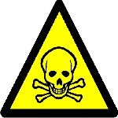

Safety
Those with visual disabilities might not be able to see dangerous locations inside of buildings. With 'Digital Eyes' they will no longer have to worry. Another future expansion of the application is to add warnings to the features that the applicatin offers. This could include any and all possible dangers the tagger of a building notices and will be fully customizable to any and all possible dangers. The warning will be able to be input into the phone using the existing speech to text we include, or a customized mp3 message can be uploaded for use in that building.
Dangers inside of buildings could range from open stairwells, which since they cannot be seen could cause a nasty fall. The application will warn users with verbal alerts and vibrates of stationary dangers of this type as they approach the danger zone. Other possible dangers include those warned about signs posted, for example, on the walls. These include, but certainly are not limited to, dangerous chemicals, necessity of protection, for things such as a chemistry lab where there are posted warning signs which the visually disabled would not be able to see, or even realize that they exist. The application will tell the user as they enter the building, or room, that the danger signs are posted on what the signs warn of. This will allow the user to decide if they still wish to enter, or if necessary go and acquire protection from the dangers, then return.